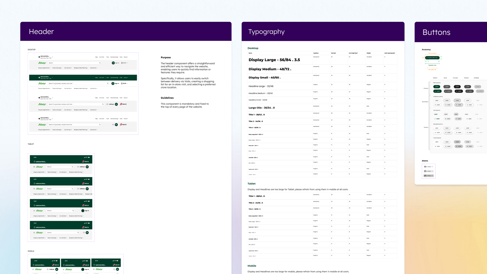
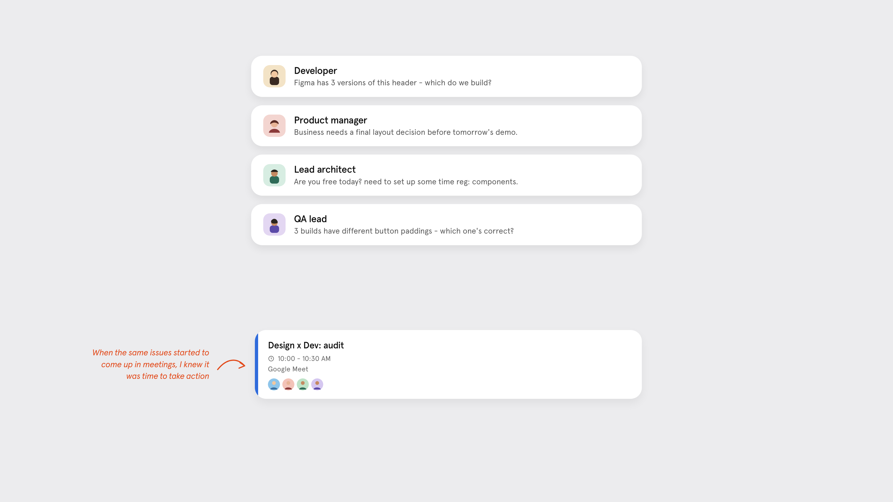
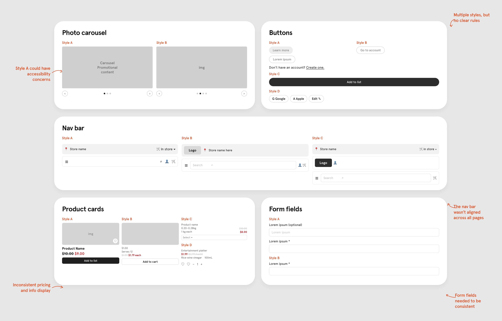

Building a scalable design system for Sobeys' growing digital ecosystem

Role
Senior Product Designer
Timeline
4 months (Feb–Jun 2024)
Team
- Product Design Manager
- Product Manager
- Technical Architect/Engineer
- Design Intern
Tools
Figma, Miro, ChatGPT
Overview
As Empire's (Sobeys' parent company) digital products expanded, inconsistent components and undocumented patterns were creating friction across design and development.
Problem
No single source of truth for components. Dev and QA teams had to guess which pattern was correct, tripling sync meetings from 1 to 3 a week.
Outcome
66% fewer meetings (3 → 1/week), reclaiming ~$78K in coordination costs and unblocking downstream dev sprints.
Why
Why did we need a design system?
Reusable component variations were being designed independently, with no single source of truth. This created a bottleneck for the dev and QA teams, who often had to guess which pattern was correct — causing friction between design and development.
We also needed a system that could be replicated not just for Sobeys, but for Empire's five other banner sites.
My role
Partnering across design, tech, and business to define the system from scratch
I worked closely with an IBM Design Lead assigned to the project, along with technical stakeholders and Sobeys partners, to define and shape the design system before handing it off to the Senior Content Designer. Prioritization and scope were shaped collaboratively across design, technical, business analyst, and client stakeholders.
3 header specs were live in prod
Pages pulled from the working file — headers, type, and buttons
Problem
Meetings tripled from 1/week → 3/week
This was the tipping point. We got recurring questions from the development team on which components were valid and ready to ship.

Discovery
Auditing high-use components to trace the friction
I reviewed recurring patterns across the existing Sobeys experience and found multiple divergent versions of fundamental components.

Divergent component variations found across product surfaces
Process
Guiding design principles
Empire Company operates several banners (Sobeys, IGA, Safeway, FreshCo, Thrifty Foods). Rather than rebuilding per brand, the system needed to separate what stays shared from what can flex:
- Shared: component structure, interaction patterns, accessibility rules
- Brand-specific: color, typography, logo lockups, select component variants
Shared foundation
Component structure, states, accessibility rules
I partnered with the Design Lead to benchmark mature design-system approaches and isolate how similar principles could be applied to Sobeys.
Google Material was an important technical reference, particularly around:
- Reusable component architecture
- Consistent component states
- Design tokens
- Clear usage guidance
- Separating foundational decisions from individual screens
The goal was not to reproduce Material, but to understand proven system patterns and adapt them to Sobeys’ product, brand, and organizational needs.
Rather than immediately attempting to support every banner, we started with Sobeys to establish and validate the core system. We needed:
- Component architecture
- States and interaction behavior
- Accessibility considerations
- Technical feasibility
- Token structure
Final deliverable
What it is today
The resulting system brought together reusable components, shared interaction patterns, token systems, and typography foundations — creating a more consistent connection between the design experience and the shipped product.
The shipped library: headers, type, and buttons in one working file
Outcome
66% fewer meetings
3 per week → 1 per week
This trend freed up time for delivery and set up the system to scale across Empire Company's additional grocery banners.
Beyond the immediate, tangible gains, the work also established a reusable foundation for expanding the system across additional Empire Company Ltd. brands.